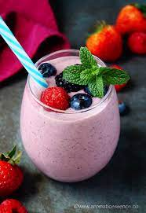

How to Make a Smoothie

Why Smoothies?
When we’re craving an easy, nutrition-packed breakfast (and just can’t be bothered to cook or chop anything), smoothies are what we turn to. Ready in a handful of minutes, they’re the perfect quick breakfast when you’ve gotta eat and get out the door.
Ingredients
- 1 banana
- 1 cup frozen strawberries
- 1 cup frozen blackberries, plus more for garnish (optional)
- 1 cup frozen raspberries
- 1 1/4 cup almond milk
- 1/2 cup greek yogurt
Steps
- In a blender, combine all ingredients and blend until smooth.
- Divide between 2 cups and top with blackberries, if desired.